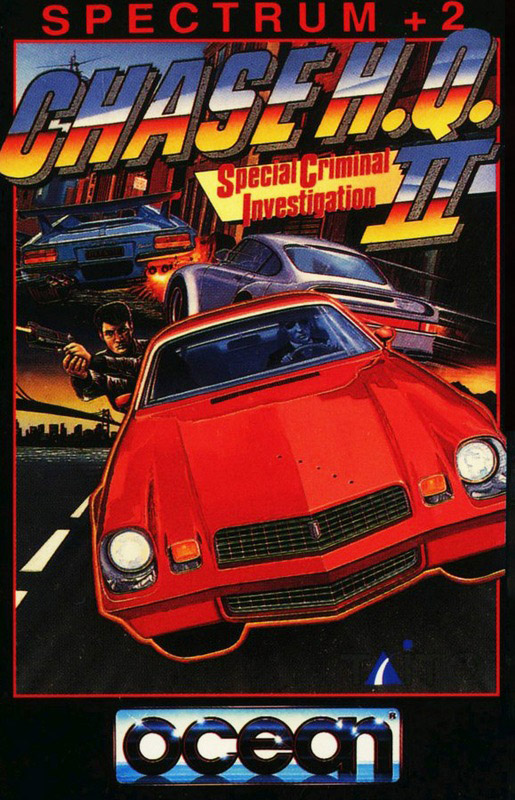
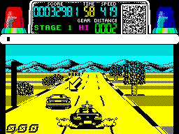

Chase H.Q.


{kind=link}

| Publisher: | Ocean |
| Price: | £9.99 Cass, £14.99 Disk |
| Year: | 1989 |
| Source: | CRASH, Issue 71 |

Cue sound of several packets of crisps being scrunched at the same time. ‘This is Nancy at Chase HQ, we’ve got a problem here, guys.’ Yep, it’s Ocean’s Christmas racing game, the conversion of the brilliant Taito coin-op. Ray Broady, Tony Gibson, the face (and 128K version the voice) of the lovely Nancy and the bodywork of the beautiful black Porsche 928 Turbo are all here. Five levels filled with tortuous bends, maniac drivers and five dangerous villains (one per level) stand between our heroes and swell earned rest in Florida (or wherever tough American cops go for a holiday).

Your controller, Nancy, starts the game by informing you which villain has an APB out on him and what car he’s driving, and then with a ‘lets go, Mr Driver’, your Porsche rockets off in hot pursuit. The status panel at the top of the screen informs you of your score, the time left, your speed (the faster the better), which gear you’re in and the distance you are from the villain you’re chasing. Put the pedal to the metal by all means (kick in the turbo booster when the felon is in sight, but it can only be used three times), Watch out for innocent bystanders, hitting them loses you valuable time. Drive too fast, and you might not negotiate junctions or miss correct turns as indicated by Nancy’s scrolling messages. When you finally get close to the villain, whose car is identified by a large arrow it’s time to make the arrest. Smash into the villain’s car to stop it — a damage meter appears at the side of the screen, when this is full the car stops and he’s nicked. The arcade version was one of my faves and the Speccy version does not disappoint. Graphically, Chase HQ is great with the mean looking black Porsche ripping along the monochrome freeways in five quite distinctly different levels.
Colour is added in the status area. Neat little touches abound, including cameos of the heroes and villains in the status area’s mini screen and the letters CHASE HQ bouncing around the screen on the title page. Chase HQ should give the rest of the racing games around this Chrimble a good run for their money.
MARK — 95%
This takes me right back to the days when Starsky and Hutch was on telly — Starsk used to put the flashing red light on top of the car and off they’d go, chasing the crook at high speed and skidding round corners. You can understand why all those cops put so much effort into their job — the satisfaction you feel when a villain is captured is tremendous. The actual roadside features of this conversion could’ve been more detailed and do jerk somewhat as they’re approached, but the road itself is plotted in perfect perspective and moves smoothly and quickly. This is an accurate conversion that is as playable as the real thing — and that sure is a big recommendation!
NICK — 94%
RATING
From start to final arrest Chase HQ is rip-roaring turbo-charged action all the way
| PRESENTATION: | 89% |
| GRAPHICS: | 89% |
| SOUND: | 87% |
| PLAYABILITY: | 91% |
| ADDICTIVITY: | 93% |
| OVERALL: | 95% |